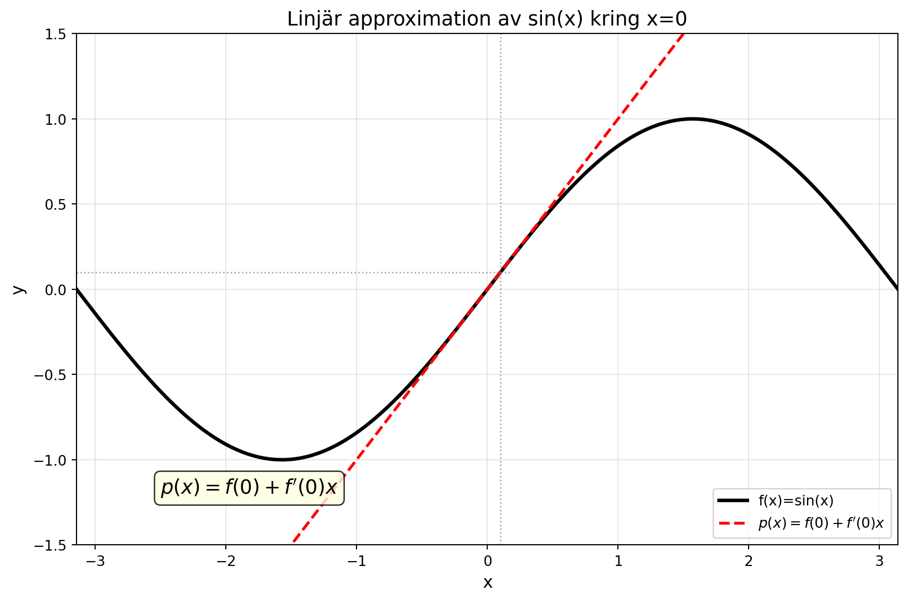
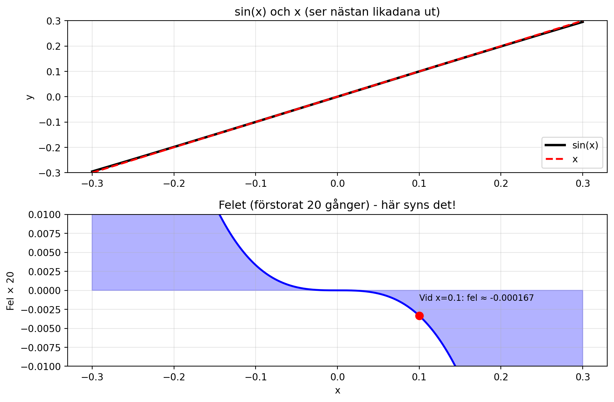
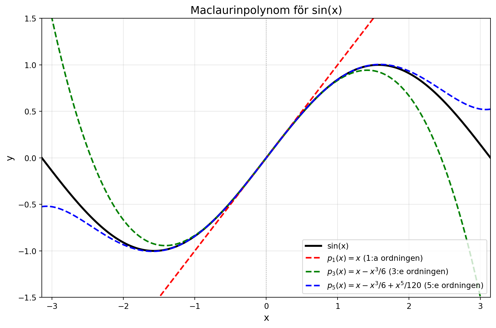
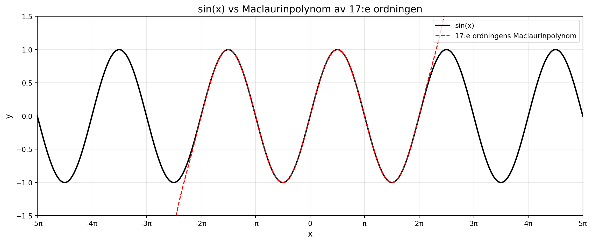

Hur kan värdet för \(\sin(0.1)\) approximeras utan digitala verktyg?


Denna approximation byggde på att funktionsvärde och derivata för linjen var samma som för kurvan där \(x=0\).
Vad händer om vi anpassar ett polynom som har flera ordningens derivator som sammanfaller med kurvans i punkten?
\[ \begin{aligned} p(x) &= f(0) + f'(0)x + f''(0)x^2 \\[2mm] &\quad {}+ f'''(0)x^3 + f^{(4)}(0)x^4 + f^{(5)}(0)x^5 \end{aligned} \]

Ju högre ordning, desto bättre anpassning

Denna typ av polynom kallas Maclaurinpolynom (Colin Maclaurin, skotsk matematiker, 1698 - 1746).
För en funktion \(f(x)\) gäller att man kan göra en approximation i närheten av \(x=0\) med ett polynom av grad \(n\) enligt
\[ f(a)\approx f(0)+f'(0)a+\frac{f''(0)a^2}{2!}+\frac{f'''(0)a^3}{3!}+... +\frac{f^{(n)}a^n}{n!} \]
Ju närmare \(a\) är noll, desto bättre blir approximationen för ett givet antal termer!
| Steg | Vad gör man? | Exempel med \(\sin(x)\), \(n=3\) |
|---|---|---|
| 1 | Ansätt | \(p(x)=a_0+a_1x+a_2x^2+a_3x^3\) |
| 2 | \(p(0)=f(0)\) | \(a_0 = \sin(0)=0\) |
| 3 | \(p'(0)=f'(0)\) | \(a_1 = \cos(0)=1\) |
| 4 | \(p''(0)=f''(0)\) | \(2a_2 = -\sin(0)=0 \Rightarrow a_2=0\) |
| 5 | \(p'''(0)=f'''(0)\) | \(6a_3 = -\cos(0)=-1 \Rightarrow a_3=-\frac{1}{6}\) |
| 6 | Skriv polynomet | \(p(x)=0 + 1\cdot x + 0\cdot x^2 - \frac{1}{6}x^3 = x - \frac{x^3}{6}\) |
\[\boxed{p_n(x) = \sum_{k=0}^{n} \frac{f^{(k)}(0)}{k!} x^k}\]
Minnesregel: “Term nr. k är funktionens k:te-derivata i noll, delat med k-fakultet, gånger x upphöjt k.”
Den kan inte slå upp i en tabell – den måste beräkna värdet.
Ingenjörernas lösning: Ersätt \(\sin(x)\) med ett enkelt polynom! För \(x=0.1\):
\[\sin{x}\approx{x-\frac{x^3}{6}+\frac{x^5}{120}}\]
Polynomet ger: \(0.1 - 0.0001667 + 0.0000000083 = 0.0998333417\)
\(\sin(0.1)\): \(0.0998334166\)
Felet: Mindre än \(0.000000075\) - otroligt litet!
Note
Pendelns rörelseekvation:
\[\theta''(t)+\frac{g}{L}\sin{\theta{(t)}}=0\]
Problemet: \(\sin(\theta)\) gör ekvationen olösbar (den kan iallafall inte uttryckas med elementära funktioner)!
Fysikernas knep: För små vinklar gäller \(\sin(\theta) \approx \theta\)
Ekvationen blir:
\[\theta''(t)+\frac{g}{L}\theta{(t)}=0\]
Detta är harmonisk svängning – enkel och lösbar!
\[\theta(t) \approx C \sin\!\left(\sqrt{\frac{g}{L}}\,t + \varphi\right)\]
Note
| Vinkel | \(\sin(\theta)\) | \(\theta\) (rad) | Relativt fel |
|---|---|---|---|
| \(5^\circ\) (0.0873 rad) | 0.08716 | 0.08727 | 0.13% |
| \(10^\circ\) (0.1745 rad) | 0.17365 | 0.17453 | 0.51% |
| \(20^\circ\) (0.3491 rad) | 0.34202 | 0.34907 | 2.06% |
| \(30^\circ\) (0.5236 rad) | 0.50000 | 0.52360 | 4.72% |
| \(45^\circ\) (0.7854 rad) | 0.70711 | 0.78540 | 11.07% |
Visste du att \(\pi/4\) kan skrivas som en oändlig summa?
Leibniz upptäckte 1673:
\[\frac{\pi}{4}=1-\frac{1}{3}+\frac{1}{5}-\frac{1}{7}+\frac{1}{9}-...\]
Var kommer denna formel ifrån?
Den är Maclaurinutvecklingen av \(\arctan(x)\):
\[\arctan{x}=x-\frac{x^3}{3}+\frac{x^5}{5}-\frac{x^7}{7}+...\]
Sedan sätts \(x=1\) in, varpå formeln erhålls (\(\arctan{1}=\pi/4\)). Den konvergerar dock långsamt. Med \(1\,000\) termer får vi endast tre korrekta decimaler.
Bättre formel (Machin, 1706): Använd
\[ \frac{\pi}{4}=\arctan\frac{1}{5}-\arctan\frac{1}{239} \]
Dessa tal är mycket närmare noll, och vi får tio korrekta decimaler med enbart fyra termer i Maclaurinutvecklingen!
Allt detta gjordes varannan sekund!
Under landning och omloppsbanemanövrar räknade datorn ut i vilken riktning som motorn skulle peka. Detta 50 gånger per sekund.
Man hade små raketer för att justera läget på farkosten. Det krävde bränsle, och förbrukningen måste optimeras. För detta fanns matematiska koder inprogrammerade i datorn.
Många av de beräkningar som gjordes var just trigonometriska, och de approximerades med tillräcklig noggrannhet med förfinade Maclaurinutvecklingar.
Datorn hade 36 Kb minne, och det minnet byggde på tunna koppartrådar som lindats för hand runt ringkärnor. 0 och 1 bestämdes av om tråden gick rakt igenom eller lindades runt den. Polynomen fanns alltså, bokstavligt, lagrade i dessa ringar!